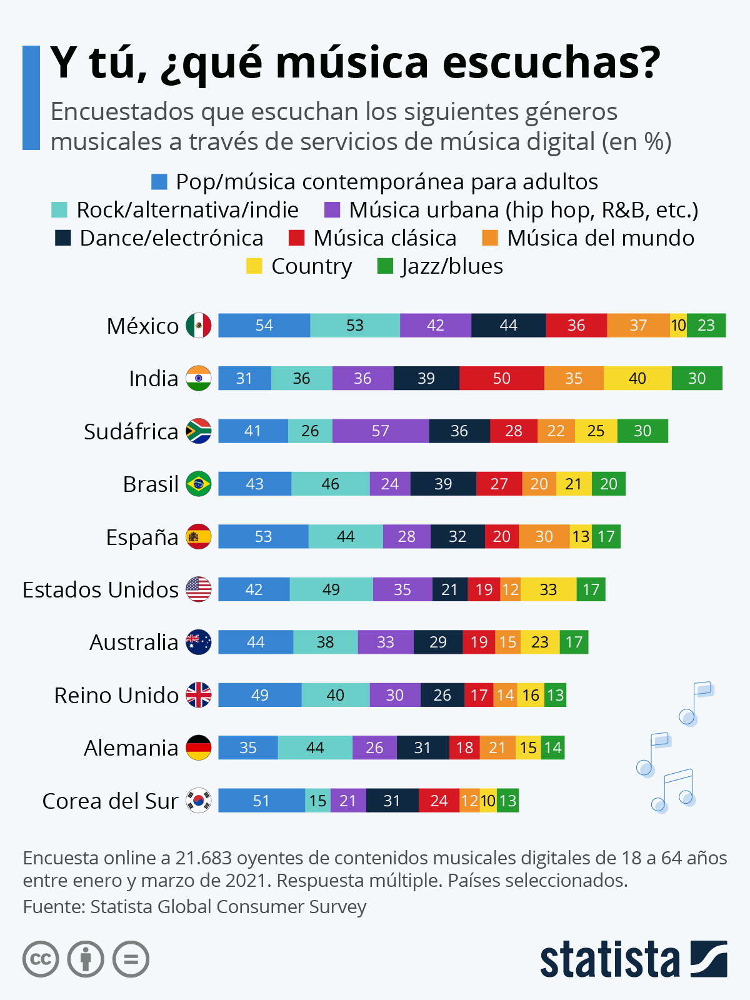

FindYourBeat

Después te mostraré una playlist adaptada a ti.
Esta encuesta meticulosamente recopila los valores de tus respuestas y ejecuta operaciones minuciosas con el objetivo de determinar con precisión cuál es tu género musical preferido. Aquí una foto de los géneros más escuchados en países influyentes.
